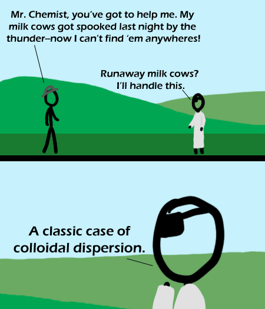

Comic JK 343
When I Feel Like It
⇤
<
?
>
⇥

⇤
<
?
>
⇥
Forum
.
RSS
.
Digg
.
Facebook
.
Reddit
.
Twitter
.
Stumbleupon
Enter your thoughts on number 343 here. Please, no spamming, trolling, or phreaking. My question is how the farmer would know to talk to this chemist about the issue-at-hand. >In the artist's world, lone scientists (like ronin) wander the earth, ever seeking to right wrongs through solution chemistry. >>That sounds like the makings of a series... have your people talk to my people over lunch... My question is why is the chemist see-through? >Most, if not all, of the characters here are only basic outlines. That was brought into a joke put into the MLK day comic. >> That's #336, BTW. >>>cowhoidal diwhatnow >>>>The joke comes from milk being a colloid, not from colloid sounding like cowloid >>>>>Also the pun on 'get settled' since colloids never settlek It's a stretch to say colloid sounds like cowloid, but I saw the joke. >Actually it's more about the milk. >>Which is a colloidal dispersion (unlike the cows, which are merely colloidal suspensions). I think to call yourself a troll is to develop delusions of grandure. >Or rather to have already DEVELOPED said delusions. Hehe, we just learned about colloids in AP Chem! Brilliant! Why is the chemist wearing an eye-patch? >Sure they aren't opaque safety goggles? Before the graphics tablet, I never knew that our characters were translucent ;) Your mother looks like a milk cow with a transparent head.